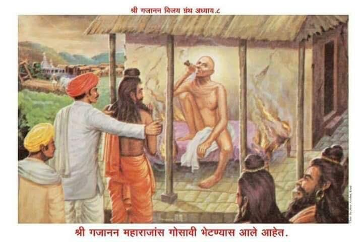

॥ अध्याय ८॥

॥ श्रीगणेशाय नमः ॥
हे वसुदेवदेवकीनंदना ।
हे गोपगोपीमनरंजना ।
हे दुष्टदानवमर्दना ।
श्रीहरी पाव मातें ॥१॥
तुझ्या प्राप्तीचें साधन ।
कर्मादिकांचें अनुष्ठान ।
परा भक्तीचें सेवन ।
करण्या आहे अपात्र मी ॥२॥
तुझीं ज्ञानदात्रीं शास्त्रें सारीं ।
गीर्वाण भाषेभीतरीं ।
त्यांचें सांग करुं हरी ।
सेवन तें कवण्या रीतीं ॥३॥
गीर्वाणाचा नसे गंध ।
त्यांतून माझी मती मंद ।
कमलांतील मकरंद ।
बेडुकाला मिळतो कसा ? ॥४॥
अन्नदानें तुझी प्राप्ति ।
जरी करुन घेऊं श्रीपती ।
तरी धनाचा अभाव निश्चिती ।
दारिद्रय पदरीं बांधिलें त्वां ॥५॥
जरी करुं मी तीर्थयात्रा ।
तरी सामर्थ्य नाहीं गात्रां ।
तशांतही अंधत्व आतां ।
आलें आहे दृष्टीतें ॥६॥
ऐसा सर्व बाजूंनीं ।
मी हीनदीन चक्रपाणी ।
दारिद्रयाचे मनीच्या मनीं ।
जाती जिरोनी मनोरथ ॥७॥
हें व्यावहारिक दृष्टया खरें जरी ।
परी तुझी कृपा झाल्यावरी ।
स्वानंदाच्या सागरीं ।
पोहत राहे अहोरात्र ॥८॥
तुझ्या कृपेचें महिमान ।
आगळें आहे सर्वांहून ।
घनाच्या पाण्यालागून ।
दाम देण्याची गरज नसे ॥९॥
मेघांनीं आणिल्या मनांत ।
तळीं विहिरी भरतात ।
निवळ खडकास फुटतात ।
पाट पाण्याचे पांडुरंगा ! ॥१०॥
ऐशा त्या तव कृपेचा ।
दासगणू हा भुकेला साचा ।
घास एखादा तरी त्याचा ।
घाल माझ्या मुखांत ॥११॥
तेणें मी तृप्त होईन ।
अवघ्या सुखातें पावेन ।
अमृताचा लाभतां कण ।
रोग सारे दूर होती ॥१२॥
असो मागील अध्यायीं ।
देशमुख पाटलाठायीं ।
मुक्कामातें दुफळीबाई ।
येऊन बसली हें ऐकिलें ॥१३॥
जेथ जेथ ही नादे दुफळी ।
तेथ तेथ ही करी होळी ।
अवघ्या सुखाची रांगोळी ।
इच्या पायीं होतसे ॥१४॥
क्षयरोग तो शरीराला ।
वा दुफळी रोग समाजाला ।
नेतसे यमसदनाला ।
प्रयत्न पडती लुळे तेथ ॥१५॥
असो तळ्याचिया कांठावर ।
देशमुखांचा एक महार ।
करुं लागला चरचर ।
या खंडूपाटलापुढें ॥१६॥
पाटील गांवीचा अधिकारी ।
पाटील गांवीची पांढरी ।
कांहीं कामावरुन खरी ।
कुरबुर झाली उभयतांत ॥१७॥
तो असे मर्या महार ।
देशमुखांचा ज्याला जोर ।
तो बोलला उणें उत्तर ।
खंडू पाटलाकारणें ॥१८॥
पाटील वदला त्यावरी ।
तुझी रीत ही नाहीं बरी ।
गरीबानें पायरी ।
आपली कधीं सोडूं नये ॥१९॥
उणीं उत्तरें बोलण्याचा ।
अधिकार आहे देशमुखाचा ।
तुझ्यासारख्या नकटयाचा ।
नाहीं हें आण मनीं ॥२०॥
तरी महार ऐकेना ।
करुं लागला चेष्टा नाना ।
त्याच्या ऐकोनी भाषणा ।
पाटील खवळला मानसीं ॥२१॥
बाचाबाचीचें कारण ।
होतें अति क्षुल्लक जाण ।
कागद ठाण्यालागून ।
पाठवणें होते पाटलाला ॥२२॥
तो टप्पा न्यावयासी ।
सांगितलें होतें महारासी ।
कीं तूं असाच जा अकोल्यासी ।
तहशिलींत टप्पा द्याया हा ॥२३॥
तें ऐकोनी वदला महार ।
मी न हा टप्पा नेणार ।
देशमुखाच्या आश्रितावर ।
तुमचा डोळा हमेशा ॥२४॥
कांहीं असो आज दिनीं ।
मी टप्पा न जाय घेवोनी ।
तुझ्या हुकुमालागुनी ।
बोंबा शिमग्याच्या समजतों मी ॥२५॥
ऐसें वदनीं बोलला ।
हावभावही तैसा केला ।
मूठ वळुनी हात नेला ।
त्यानें आपल्या मुखापुढें ॥२६॥
ती त्याची पाहूनि कृती ।
खंडू पाटील कोपला चित्तीं ।
भरीव वेळूची काठी होती ।
पाटलाच्या हातांत ॥२७॥
त्याच काठीचा केला प्रहार ।
महाराचिया हातावर ।
पाटील मूळचा जोरदार ।
त्यानें रागें केला प्रहार हा ॥२८॥
त्या प्रहारें करुनी ।
हात गेला मोडूनी ।
महार बेशुद्ध होवोनी ।
पडता झाला भूमीवर ॥२९॥
पाटील दुसर्या महाराला ।
गेले टप्पा द्यावयाला ।
तों इकडे वृत्तान्त कैसा झाला ।
तो आतां सांगतों ॥३०॥
तो महार त्याच्या आप्तांनीं ।
नेला उचलून देशमुखसदनीं ।
मोडला हात हें पाहूनि ।
देशमुख ते संतोषले ॥३१॥
वा ! वा ! छान गोष्ट झाली ।
आपणां कुरापत काढण्या भली ।
ही अनायासें संधी आली ।
ती उपयोगी न दवडणें ॥३२॥
त्यांनीं त्या महारासी ।
तात्काळ नेलें कचेरीसी ।
समाजविलें अधिकार्यासी ।
खोटेंनाटें विबुध हो ॥३३॥
कोठेंही दोन पक्षांत ।
वांकडें आल्या यत्किंचित् ।
कांटयांचेच होतात ।
नायटे ते अवलोका ॥३४॥
फिर्याद त्या महाराची ।
पुस्तकांत नोंदली साची ।
आज्ञा झाली अधिकार्याची ।
पाटील पकडून आणावया ॥३५॥
शेगांवीं झाली पुकार ।
उद्यां आहे पडणार ।
पाटलाच्या पदीं थोर ।
बेडी करीं हातकडया ॥३६॥
खंडू पाटला समजलें ।
धाबें त्याचें दणाणलें ।
तोंडचें पाणी पळालें ।
झाला अति चिंतातुर ॥३७॥
ज्या शेगांवीं मी वाघापरी ।
वागत होतों आजवरी ।
तेथेंच कां हा श्रीहरी ।
प्रसंग आणिला बेंडीचा ॥३८॥
अब्रुदारास अपमान ।
वाटे मरणाहून मरण ।
बंधु गेले घाबरुन ।
कांहीं विचार सुचेना ॥३९॥
खंडू हताश होऊन बसला ।
तों एक विचार सुचला त्याला ।
श्रीगजानन महाराजाला ।
सांकडें हें घालावें ॥४०॥
त्या साधूचे वांचून ।
या संकटाचें निरसन ।
करणारा न कोणी आन ।
राहिला या वर्हाडीं ॥४१॥
लौकिकीं यत्न करण्याला ।
बंधु गेले अकोल्याला ।
खंडू पाटील नीट आला ।
समर्थांकडे रात्रीस ॥४२॥
येतांच केला नमस्कार ।
शिर ठेविलें पायांवर ।
महाराज आला कठीण फार ।
प्रसंग तो माझ्यावरी ॥४३॥
सरकारी कामानिमित्त ।
मी एका महाराप्रत ।
तळ्यापाशीं ताडिलें सत्य ।
करांतील काठीनें ॥४४॥
त्याचा ऐसा परिणाम झाला ।
कांटयाचा नायटा केला ।
देशमुख मंडळींनीं भला ।
माझें अहित करण्यास ॥४५॥
त्यानिमित्त कैद मला ।
होण्याचा उद्यां प्रसंग आला ।
समर्था माझ्या इज्जतीला ।
तुजवीण कोण रक्षील ? ॥४६॥
उद्यां येतील राजदूत ।
मला येथूनि नेण्याप्रत ।
बेडी ठोकोनि पायांत ।
ऐसें आज ऐकिलें ॥४७॥
त्यापेक्षां गुरुवरा ।
गळा माझा येथेंचि चिरा ।
ही घ्या तलवार देतों करां ।
वेळ करुं नका हो ॥४८॥
अब्रुदाराकारण ।
बेइज्जत हेंच मरण ।
अपराध माझा त्यांतून ।
अति अल्प दयाळा ॥४९॥
त्या अपराधरुपी खडयाचा ।
हा डोंगर झाला साचा ।
अभिमान माझ्या अब्रूचा ।
धरा समर्था ये काळीं ॥५०॥
जयद्रथाच्या वेळेला ।
अग्निकाष्ठ भक्षिण्याला ।
होता अर्जुन तयार झाला ।
केवळ आपुल्या अब्रूस्तव ॥५१॥
तेथें भगवंतानें भली ।
अब्रू त्याची रक्षण केली ।
प्रभूनें वस्त्रें नेसविलीं ।
द्रौपदीला सभेंत ॥५२॥
तेवीं मम अब्रूही पांचाळी ।
देशमुख कौरवांनीं आणिली ।
नग्न करण्यासाठीं भली ।
तिचें करा हो रक्षण ॥५३॥
ऐसें वदून समर्थाला ।
पाटील रडूं लागला ।
आसवांचा तो चालला ।
पूर नेत्रांवाटें हो ! ॥५४॥
घरचीं माणसें चिंतातुर ।
आधींच झालीं होतीं फार ।
नाहीं त्यांच्या शोका पार ।
तो सांगावा कोठवरी ? ॥५५॥
इकडे समर्थांनीं भले ।
दोन्ही हातीं कवटाळिलें ।
खंडू पाटला हृदयीं धरिलें ।
त्याचें सांत्वन करावया ॥५६॥
अरे ! कामकर्त्या पुरुषाप्रत ।
ऐशीं संकटें येतात ।
वरच्यावरी जाण सत्य ।
त्याची चिंता वाहूं नको ॥५७॥
स्वार्थदृष्टि बळावतां ।
ऐसेंच होतें तत्त्वतां ।
खर्या नीतीची ती वार्ता ।
अणुमात्र त्या कळत नसे ॥५८॥
तुम्ही पाटील देशमुख दोघेजण ।
एका जातीचे असून ।
एकमेकांचें नुकसान ।
स्वार्थें करुं पाहतां ॥५९॥
मागें कौरवपांडवांत ।
स्वार्थेंच आला विपट सत्य ।
परि पांडवांचा पक्ष तेथ ।
न्यायें खरा होता कीं ॥६०॥
म्हणून पांडवांकारणें ।
साह्य केलें भगवंतानें ।
सत्यासाठीं मारणें ।
भाग पडलें कौरवांना ॥६१॥
जा भिऊं नकोस तिळभर ।
बेडी न तुशीं पडणार ।
किती जरी केला जरी केला जोर ।
देशमुखानें आपला ॥६२॥
तेंच पुढें खरें झालें ।
पाटील निर्दोषी म्हणून सुटले ।
जें कां संतमुखावाटें आलें ।
तें न खोटें होई कधीं ॥६३॥
पाटील मंडळी उत्तरोत्तर ।
भजूं लागली साचार ।
कोणा नाहीं आवडणार ।
अमृत तें सेवावया ? ॥६४॥
पुढें खंडू पाटलानें ।
करुन विनंति प्रेमानें ।
नेलें रहायाकारणें ।
समर्थाला निजगृहीं ॥६५॥
असतां पाटील सदनांत ।
गजाननस्वामी समर्थ ।
ब्राह्मण आले अवचित ।
दहापांच तैलंगी ॥६६॥
तैलंगी विद्वान असती ।
कर्मठ वेदावरी प्रीती ।
परी धनाचा लोभ चित्तीं ।
राही ज्यांच्या विशेष ॥६७॥
तें कांहीं मिळेल म्हणून ।
समर्थाकडे आले जाण ।
तयीं होते पांघरुण ।
घेऊन समर्थ निजलेले ॥६८॥
त्यांना जागे करण्याप्रत ।
ब्राह्मण म्हणूं लागले मंत्र ।
जटेचे ते स्वरासहित ।
अति उच्च स्वरानें ॥६९॥
मंत्र म्हणण्यांत चूक झाली ।
ती न त्यांनीं दुरुस्त केली ।
म्हणून आसनीं उठून बसली ।
गजाननाची स्वारी पहा ॥७०॥
आणि ऐसें वदले ब्राह्मणांला ।
तुम्ही कशासाठीं वैदिक झालां ।
हीनत्व वेदविद्येला ।
आणूं नका रे निरर्थक ॥७१॥
ही न विद्या पोटाची ।
मोक्षदात्री आहे साची ।
वा डोईस बांधल्या शालीची ।
किंमत कांहीं राखा हो ॥७२॥
मी म्हणतों ऐसें म्हणा ।
खरे स्वर मनीं आणा ।
उगीच भोळ्या भाविकांना ।
सोंग आणून नाडूं नका ॥७३॥
जी ऋचा ब्राह्मणांनीं ।
म्हणण्या सुरुं केली जाणी ।
तोच अध्याय समर्थांनीं ।
धडधड म्हणून दाखविला ॥७४॥
चूक न कोठें म्हणण्यांत ।
शब्दोच्चार स्पष्ट सत्य ।
वाटे वसिष्ठ मूर्तिमंत ।
वेद म्हणण्या बसला असे ॥७५॥
तेलंगी तें ऐकून चकित झाले ।
अधोवदन बैसले ।
मुख वरी करण्या आपुलें ।
भय मनीं वाटलें त्यां ॥७६॥
सूर्य उदय झाल्यावर ।
त्याच्यापुढें कां होणार ।
दीपांचा तो जयजयकार ।
त्यांची किंमत अंधारीं ॥७७॥
विप्र म्हणती आपुल्या मनीं ।
हा पिसा कशाचा महाज्ञानी ।
चारी वेद याच्या वदनीं ।
नांदतात प्रत्यक्ष ॥७८॥
हा विधाताच होय दुसरा ।
शंका येथें नुरली जरा ।
हा असावा ब्राह्मण खरा ।
जातीनें कीं निःसंशय ॥७९॥
परमहंस दीक्षा याची ।
वार्ता न उरली बंधनाची ।
कोणत्याही प्रकारची ।
हा जीवन्मुक्त सिद्धयोगी ॥८०॥
कांहीं पुण्य होतें पदरीं ।
म्हणून मूर्ति पाहिली खरी ।
हा वामदेव याला दुसरी ।
उपमा न ती द्यावया ॥८१॥
असो खंडू पाटलाकडून ।
त्या ब्राह्मणांलागून ।
देते झाले दयाघन ।
रुपया रुपया दक्षिणा ॥८२॥
ब्राह्मण संतुष्ट झाले ।
अन्य गांवां निघून गेले ।
महाराजही कंटाळले ।
उपाधीला गांवच्या ॥८३॥
श्रोते खर्या संताप्रत ।
उपाधी ना असे पटत ।
दांभिकाला मात्र ।
भूषण होतें तियेचें ॥८४॥
गांवाचिया उत्तरेला ।
एक मळा सान्निध्याला ।
या मळ्यांत भाजीपाला ।
होत होता बहुवस ॥८५॥
एक शिवाचें मंदिर ।
तेथें होतें साचार ।
लिंबतरुंची थंडगार ।
छाया होती ते ठायीं ॥८६॥
हा कृष्णाजी पाटलाचा ।
मळा होता मालकीचा ।
हा कृष्णाजी खंडुजीचा ।
सगळ्यांत शेवटला भाऊ असे ॥८७॥
त्या मळ्यांत महाराज आले ।
शिवालयासन्निध बसले ।
एका ओटयावरी भले ।
निंबतरुच्या छायेंत ॥८८॥
समर्थ म्हणाले कृष्णाजीसी ।
मी आलों तुझ्या मळ्यासी ।
कांहीं दिवस राहावयासी ।
या श्रीशंकरासन्निध ॥८९॥
हा भोलानाथ कर्पूरगौर ।
नीलकंठ पार्वतीवर ।
हा राजराजेश्वर ।
आहे अवघ्या देवांचा ॥९०॥
तो तुझ्या मळ्यांत रमला ।
म्हणून मींही विचार केला ।
येथें येण्याचा तो भला ।
दे साउली करुन ॥९१॥
तें वाक्य ऐकिलें ।
सहा पत्रे आणविले ।
ओटयावरी छप्पर केलें ।
कृष्णाजीनें तात्काळ ॥९२॥
समर्थांनीं वास केला ।
म्हणून मला क्षेत्र झाला ।
राजा जाय जया स्थला ।
मीच होते राजधानी ॥९३॥
महाराजांचे बरोबर ।
होता पाटील भास्कर ।
सेवा करण्या निरंतर ।
दुसरा तुकाराम कोकाटया ॥९४॥
खाण्यापिण्याची तरतूद सारी ।
निजांगें कृष्णाजी पाटील करी ।
समर्थ ते जेवल्यावरी ।
तो प्रसाद घेत असे ॥९५॥
असो गजानन असतां मळ्यांत ।
गोष्ट घडली अद्भुत ।
येते झाले फिरत फिरत ।
दहा वीस गोसावी ते ठायां ॥९६॥
समर्थांचा बोलबाला ।
त्यांनीं आधींच होता ऐकिला ।
म्हणूनि त्यांनीं तळ दिला ।
येऊनि या मळ्यामध्यें ॥९७॥
गोसावी म्हणती पाटलासी ।
आम्ही आहों तीर्थवासी ।
जातों रामेश्वरासी ।
भागीरथीला घेऊन ॥९८॥
गंगोत्री जम्नोत्री केदार ।
हिंगलाज गिरनार डाकुर ।
ऐशीं क्षेत्रें अपार ।
पाहिलीं पायीं फिरुनी ॥९९॥
ब्रह्मगिरी गोसाव्याचे ।
आम्ही शिष्य आहों साचे ।
महाराजही आमुचे ।
आहेत सांप्रत बरोबर ॥१००॥
हे महासाधु ब्रह्मगिरी ।
ज्यांचा बंदा गुलाम हरी ।
ती मूर्ति आली घरीं ।
तुझ्या पूर्वभाग्यानें ॥१॥
शिरापुरीचें अयाचित ।
आम्हां द्यावें तुम्ही त्वरित ।
लागे जो ओढण्याप्रत ।
गांजा तोही पुरवावा ॥२॥
तीन दिवस येथें राहूं ।
चौथे दिवशीं येथून जाऊं ।
पाटील नका कष्टी होऊं ।
साधून घ्या ही पर्वणी ॥३॥
तुम्ही पोशिला मळ्यांत ।
वेडा पिसा नंगाधूत ।
मग आम्हां देण्या अयाचित ।
मागें पुढें कां पाहतां ? ॥४॥
गाढवासी पोशिती ।
गाईस लाथा मारिती ।
ते का म्हणावें सन्मती ।
पहा विचार करुन ॥५॥
आम्ही गोसावी वैराग्यभरित ।
जाणतों अवघा वेदान्त ।
मर्जी असल्या मळ्यांत ।
या पोथी ऐकावया ॥६॥
कृष्णाजी म्हणे त्यावरी ।
उद्यां घालीन शिरापुरी ।
आज आहेत भाकरी ।
त्याच जाव्या घेऊन ॥७॥
जितुका गांजा ओढाल ।
तितुका तेथेंच मिळेल ।
तेथें चालता बोलता कंठनीळ ।
बसला आहे पत्र्यामध्यें ॥८॥
दोन प्रहराची वेळा खरी ।
घेतल्या चूण भाकरी ।
मळ्यांत घेउनि विहिरीवरी ।
बसले गोसावी भोजना ॥९॥
समर्थांच्या समोरी ।
एका छपराभीतरीं ।
गोसाव्यांनीं लाविली खरी ।
आपआपलीं कडासनें ॥११०॥
त्यांचा जो होतो महंत ।
ब्रह्मगिरी नामें सत्य ।
तो भगवद्गीतेप्रत ।
वाचूं लागला अस्तमानीं ॥११॥
गोसावी श्रवणा बैसले ।
गांवांतूनही कांहीं आले ।
पोथी ऐकावया भले ।
त्या ब्रह्मगिरी गोसाव्याची ॥१२॥
"नैनं छिन्दन्ति" हा श्लोक ।
निरुपणाचा होता देख ।
ब्रह्मगिरी पक्का दांभिक ।
स्वानुभवाचा लेश नसे ॥१३॥
निरुपण त्याचें ऐकिलें ।
गांवकर्यास नाहीं पटलें ।
ते आपसांत बोलूं लागले ।
हा नुसता शब्दच्छल ॥१४॥
सारे पोथी ऐकिल्यावरी ।
येऊन बसले पत्र्याभीतरीं ।
गजाननाच्या समोरी ।
संतदर्शन घ्यावया ॥१५॥
लोक म्हणती छपराला ।
निरुपणाचा भाग झाला ।
येथें पत्र्यास बैसला ।
स्वानुभवाचा पुरुष हा ॥१६॥
तेथें ऐकला इतिहास ।
येथें पाहिला प्रत्यक्ष पुरुष ।
या भाषणें गोसाव्यास ।
राग आला कांहींसा ॥१७॥
अवघे गोसावी गांजा प्याया ।
बसले होते घेऊनिया ।
त्या पत्र्याचिया ठायां ।
चालली चिलीम गांजाची ॥१८॥
पत्र्यांत पलंगाच्या वरी ।
बसली होती समर्थस्वारी ।
चिलीम भरुन वरच्यावरी ।
प्याया देई भास्कर ॥१९॥
त्या चिलिमीच्या विस्तवाची ।
ठिणगी पलंगीं पडली साची ।
ती पडतांना कोणाची ।
दृष्टि न गेली तिच्यावर ॥१२०॥
कांहीं वेळ गेल्यावर ।
निघूं लागला धूर ।
पलंग पेटला अखेर ।
एकदम चहूं बाजूंनीं ॥२१॥
तो प्रकार पाहतां ।
भास्कर बोले सद्गुरुनाथा ।
पलंग सोडा शीघ्र आतां ।
या खालीं उतरुन ॥२२॥
लाकडें हीं पलंगाचीं ।
आहेत कीं सागाचीं ।
तीं न आतां विझायाचीं ।
पाण्यावांचून दयाळा ॥२३॥
तयीं समर्थ बोलले वाचें ।
भास्करा अग्नि विझविण्याचें ।
कारण नाहीं तुला साचें ।
जल मुळींच आणूं नको ॥२४॥
अहो महाराज ब्रह्मगिरी ।
या बैसा पलंगावरी ।
तुम्हां आहे अवगत खरी ।
भगवद्गीता साकल्यें ॥२५॥
त्याच्या परीक्षेची वेळ ।
आणिली हरीनें तात्काळ ।
ब्रह्मा न जाळी अनळ ।
याचा प्रत्यय दाखवा ॥२६॥
"नैनं छिन्दन्ति" श्लोकावर ।
व्याख्यान केलें एक प्रहर ।
आतां कां मानितां दर ।
या पलंगीं बसण्याचा ? ॥२७॥
जा भास्करा लौकरी ।
ब्रह्मगिरीला करीं धरी ।
आणून बसवी अत्यादरीं ।
या जळत्या पलंगास ॥२८॥
ऐशी आज्ञा होतां क्षणीं ।
भास्कर गेला धांवोनी ।
ब्रह्मगिरीचा सव्य पाणी ।
धरिला त्यानें निजकरें ॥२९॥
भास्कराचें शरीर ।
धिप्पाड सशक्त पिळदार ।
तो गोसावि त्याच्या समोर ।
शोभूं लागला घुंगुरडें ॥१३०॥
पलंग पेटला चौफेर ।
ज्वाळा निघूं लागल्या थोर ।
परी महाराज आसनीं स्थिर ।
हलले मुळीं न इतकेंही ॥३१॥
श्री प्रल्हाद कयाधूसुत ।
उभा केला अग्नींत ।
हें लिहिलें पुराणांत ।
श्रीव्यासांनीं भागवतीं ॥३२॥
त्या लिहिल्या गोष्टीचें ।
प्रत्यंतर दाविलें साचें ।
मळ्यामाजीं कृष्णाजीचें ।
श्रीगजानन साधूंनीं ॥३३॥
ब्रह्मगिरी म्हणे भास्कराशीं ।
मला न न्या पलंगापाशीं ।
महाराजांच्या अधिकाराशीं ।
मीं नाहीं जाणितलें ॥३४॥
तें न मानी भास्कर ।
ओढीत आणिला फरफर ।
उभा केला समोर ।
आपल्या सद्गुरुरायाच्या ॥३५॥
’नैनं दहति पावक ।
’ हें खरें करुन दावा वाक्य ।
ऐसें बोलतां महाराज देख ।
गोसावी परम घाबरला ॥३६॥
गोसावी म्हणे भीत भीत ।
मी पोटभर्या आहे संत ।
शिरापुरी खाण्याप्रत ।
मी झालों गोसावी ॥३७॥
माझ्या अपराधाची क्षमा ।
साच करी शांतिधामा ।
केला खटाटोप रिकामा ।
गीताशास्त्र शिकण्याचा ॥३८॥
तुला पिसा मी म्हणालों ।
आतां पस्तावा पावलों ।
मी दांतीं तृण धरुन आलों ।
शरण तुला अभय दे ॥३९॥
शेगांवच्या जनांनीं ।
केली समर्थां विनवणी ।
आपणा अग्नीपासूनी ।
भय नाहीं हें खरें ॥१४०॥
तरी महाराज आमच्याकरितां ।
खालीं यावें लवकर आतां ।
अशा स्थितींत पाहतां ।
तुम्हां आम्हां धडकी भरे ॥४१॥
म्हणून आमच्यासाठीं ।
उतरा खालीं ज्ञानजेठी ॥
गोसावी झाला हिंपुटी ।
तो न कांहीं बोलला ॥४२॥
लोक विनंतीस द्याया मान ।
खालीं उतरले गजानन ।
तो पलंग पडला कोसळून ।
एक पळही न लागलें त्या ॥४३॥
अवघाच होता जळला ।
जो भाग शेष उरला ।
तो लोकांनीं विझविला ।
साक्ष दावण्या इतरांसी ॥४४॥
ब्रह्मगिरी पायीं लागला ।
निरभिमान अवघा झाला ।
स्पर्श होता गंगाजला ।
मल कोठूनी राही तेथ ? ॥४५॥
मग मध्यरात्रीच्या समयाला ।
ब्रह्मगिरीस बोध केला ।
आजपासून चेष्टेला ।
तूं या सोडून देईं रे ॥४६॥
ज्यांनीं राख लावावी ।
त्यांनीं उपाधी दूर ठेवावी ।
अनुभवावीण न सांगावी ।
गोष्ट कोणा निरर्थक ॥४७॥
नुसतें शब्दपांडित्य ।
माजलें जगीं अतोनात ।
तेणेंच आहे झाला घात ।
आपुल्या या संस्कृतीचा ॥४८॥
गोसावी मच्छिंद्र जालंदर ।
गोरख गहिनी साचार ।
ज्ञानेश्वराचा अधिकार ।
किती म्हणून सांगावा ॥४९॥
स्वानुभवाचे झाले यती ।
श्रीशंकराचार्य निश्चितीं ।
प्रपंचीं राहून ब्रह्मस्थिति ।
अनुभविली एकनाथांनीं ॥१५०॥
स्वामी समर्थ ब्रह्मचारी ।
हेही ब्रह्मसाक्षात्कारी ।
होऊन गेले भूमीवरी ।
यांचीं चरित्रें आणी मना ॥५१॥
उगीच खाया शिरापुरी ।
भटकूं नको भूमीवरी ।
सार न तयामाझारीं ।
येतुलेंही गवसणार ॥५२॥
ऐसा बोध ऐकिला ।
ब्रह्मगिरी विरक्त झाला ।
प्रातःकाळींच उठोन गेला ।
कोणा न भेटतां शिष्यांसह ॥५३॥
ही गोष्ट दुसर्या दिवशीं ।
कळली अवघ्या गांवासी ।
जो तो आला पाहावयासी ।
मळ्यांत जळलेल्या पलंगातें ॥५४॥
हा दासगणूविरचित ।
गजाननविजय नामें ग्रंथ ।
तारो भाविकां भवाब्धींत ।
हेंचि इच्छी दासगणू ॥१५५॥ शुभं भवतु ॥
शुभं भवतु ॥ श्रीहरिहरार्पणमस्तु ॥
॥इति अष्टमोऽध्यायः समाप्तः ॥